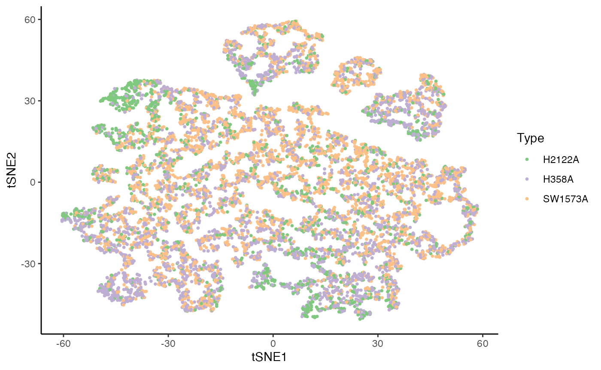
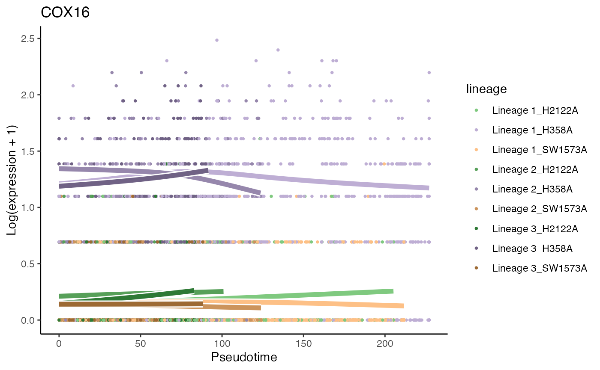
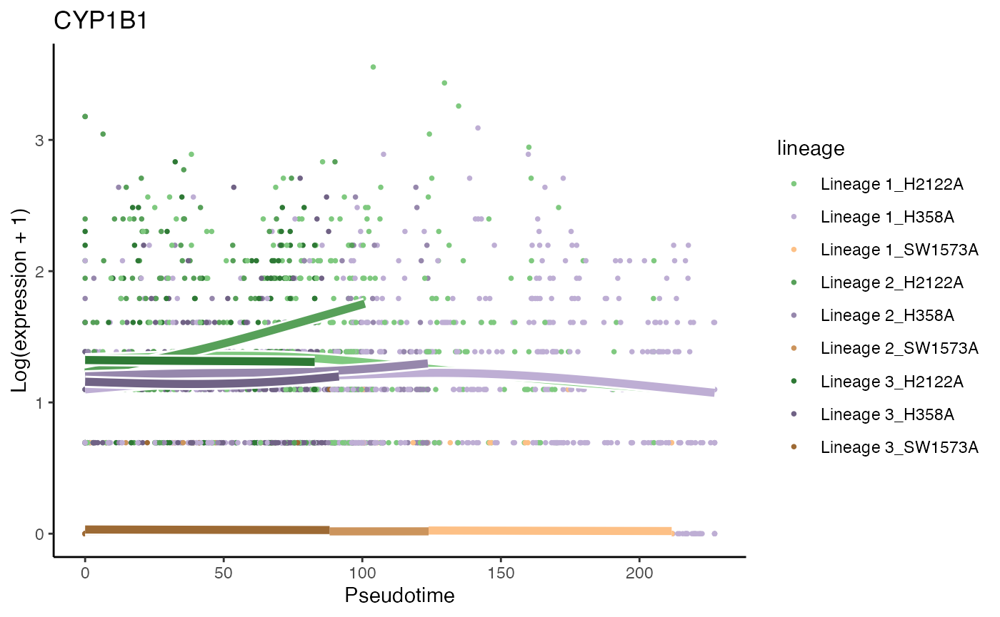

Analysis of the KRAS datataset
Hector Roux de Bézieux
KRAS.RmdLoad data
The dataset we will be working with concerns a single-cell RNA-sequencing dataset consisting of three cancer models under a KRAS(G12C) inhibition (Xue et al. 2020).
libs <- c("here", "dplyr", "tradeSeq", "SingleCellExperiment", "slingshot",
"condiments", "scater", "RColorBrewer", "pheatmap", "cowplot",
"tidyr")
suppressMessages(
suppressWarnings(sapply(libs, require, character.only = TRUE))
)## here dplyr tradeSeq
## TRUE TRUE TRUE
## SingleCellExperiment slingshot condiments
## TRUE TRUE TRUE
## scater RColorBrewer pheatmap
## TRUE TRUE TRUE
## cowplot tidyr
## TRUE TRUE
rm(libs)
theme_set(theme_classic())
kras <- condimentsPaper::import_KRAS()
data("kras", package = "condimentsPaper")EDA
Reduced dimension coordinates are obtained from the original publication.
cols <- c(brewer.pal(5, "Blues")[2:5], brewer.pal(3, "Greens")[2:3], brewer.pal(3, "Reds")[2:3],
brewer.pal(3, "Oranges")[2], "Grey")
names(cols) <- c(3, 5, 4, 1, 8, 2, 9, 10, 6, 7)
kras$Cluster <- as.character(kras$Cluster)
reducedDim(kras, "TSNE") <- colData(kras)[, c("tSNE1", "tSNE2")] %>% as.matrix()
df <- colData(kras)[, 1:98] %>% as.data.frame() %>%
sample_frac(1)
p1 <- ggplot(df, aes(x = tSNE1, y = tSNE2, col = Batch)) +
geom_point(size = .7) +
scale_color_brewer(palette = "Accent") +
labs(col = "Type")
p1
p2 <- ggplot(df, aes(x = tSNE1, y = tSNE2, fill = Cluster)) +
geom_point(size = 1, alpha = .65, col = "grey70", shape = 21) +
scale_fill_manual(values = cols) +
labs(fill = "Cell Clusters")
p2Imbalance score
kras <- imbalance_score(Object = kras, conditions = "Batch", dimred = "TSNE")
df$scores <- kras[, df$X1]$scores$scaled_scores
p3 <- ggplot(df, aes(x = tSNE1, y = tSNE2, col = scores)) +
geom_point(size = .7) +
scale_color_viridis_c(option = "C") +
labs(col = "Score")
p3Differential Topology
To estimate the trajectory, we use slingshot (Street et al. 2018).
Fit slingshot
kras <- slingshot(kras, reducedDim = "TSNE", clusterLabels = kras$Cluster,
start.clus = 7, extend = "n", reweight = FALSE, reassign = FALSE)Topology Test
topologyTest(kras, conditions = "Batch", rep = 50)## Generating permuted trajectories## Running Classifier test## Loading required package: lattice## method thresh statistic p.value
## 1 Classifier 0.01 0.9115526 0Individual curves
sdss <- slingshot_conditions(kras, kras$Batch, approx_points = FALSE,
extend = "n", reweight = FALSE, reassign = FALSE)
sdss$condition_id <- names(sdss)
sdss$mapping <- matrix(rep(1:3, each = 3), nrow = 3, ncol = 3, byrow = TRUE)
sds <- do.call(merge_sds, sdss)
df <- full_join(
df %>% select(X1, tSNE1, tSNE2, Cluster, Batch) %>%
dplyr::rename("cells" = "X1"),
slingPseudotime(sds) %>%
as.data.frame() %>%
mutate(cells = rownames(.))
) %>%
pivot_longer(starts_with("Lineage"), names_to = "Curve", values_to = "pst")## Joining, by = "cells"
p4 <- ggplot(df, aes(x = tSNE1, y = tSNE2, col = Batch)) +
geom_point(size = .7, alpha = .1) +
scale_color_brewer(palette = "Accent")
for (batch in unique(kras$Batch)) {
sds_cond <- sdss[[batch]]
for (i in 1:3) {
p4 <- p4 +
geom_path(data = slingCurves(sds_cond)[[i]]$s[slingCurves(sds_cond)[[i]]$ord, ] %>%
as.data.frame() %>%
mutate(Batch = batch),
size = 1.5)
}
}
position <- data.frame(
"tSNE1" = c(40, -30, 45),
"tSNE2" = c(50, -50, -50),
"Batch" = "H2122A",
"text" = paste0("Lineage ", 1:3)
)
p4 <- p4 +
geom_text(data = position, col = "black", aes(label = text), size = 5)
p4
p <- ggplot(df, aes(x = tSNE1, y = tSNE2, col = Batch)) +
geom_point(size = .7, alpha = .1) +
scale_color_brewer(palette = "Accent")
cls <- df %>% group_by(Cluster, Batch) %>%
dplyr::summarise(tSNE1 = mean(tSNE1), tSNE2 = mean(tSNE2), .groups = NULL)## `summarise()` has grouped output by 'Cluster'. You can override using the `.groups` argument.
p <- p +
geom_point(data = cls, size = 3)
edges <- lapply(slingLineages(sds), function(lin) {
from <- lin[1:(length(lin) - 1)]
to <- lin[2:length(lin)]
return(data.frame("from" = from, "to" = to))
}) %>% bind_rows()
for (batch in unique(kras$Batch)) {
cl_batch <- cls %>% filter(Batch == batch)
edges_batch <- left_join(edges, cl_batch, by = c("from" = "Cluster")) %>%
left_join(cl_batch %>% dplyr::rename("tSNE1_end" = "tSNE1",
"tSNE2_end" = "tSNE2") %>%
select(-Batch), by = c("to" = "Cluster") )
p <- p +
geom_segment(data = edges_batch, aes(xend = tSNE1_end, yend = tSNE2_end),
size = 2)
}
p
Differential Progression
Test
progressionTest(sds, conditions = kras$Batch, lineages = TRUE)## lineage statistic p.value
## 1 All 0.8101604 0.000000e+00
## 2 1 0.5062181 4.323063e-42
## 3 2 0.4875845 1.317685e-15
## 4 3 0.4432164 1.026836e-09Plot
p5 <- ggplot(df, aes(x = pst)) +
geom_density(alpha = .4, aes(fill = Batch), col = "transparent") +
geom_density(aes(col = Batch), fill = "transparent", size = 1.5) +
guides(col = "none") +
scale_fill_brewer(palette = "Accent") +
scale_color_brewer(palette = "Accent") +
labs(x = "Pseudotime", fill = "Type") +
facet_wrap(~ Curve, scales = "free_x")
p5Differential fate selection
Test
fateSelectionTest(sds, conditions = kras$Batch, pairwise = TRUE)## note: only 1 unique complexity parameters in default grid. Truncating the grid to 1 .
##
## note: only 1 unique complexity parameters in default grid. Truncating the grid to 1 .
##
## note: only 1 unique complexity parameters in default grid. Truncating the grid to 1 .
##
## note: only 2 unique complexity parameters in default grid. Truncating the grid to 2 .## pair statistic p.value
## 1 All 0.4733906 5.883231e-34
## 2 1vs2 0.4282838 8.496977e-15
## 3 1vs3 0.3911905 3.115872e-07
## 4 2vs3 0.4868789 2.118655e-19Plot
weights <- condiments:::.sling_reassign(sds)
df <- df %>%
full_join(weights %>%
as.data.frame() %>%
mutate(cells = rownames(.)) %>%
dplyr::rename("Lineage1" = V1, "Lineage2" = V2, "Lineage3" = V3) %>%
pivot_longer(starts_with("Lineage"), names_to = "Curve", values_to = "weights")
)## Joining, by = c("cells", "Curve")
df_w <- df %>%
select(-pst) %>%
group_by(cells) %>%
mutate(weights = weights / sum(weights)) %>%
pivot_wider(names_from = "Curve", values_from = "weights")
p <- ggplot(df_w, aes(x = Lineage1, y = Lineage3)) +
geom_hex() +
scale_fill_viridis_c(direction = -1) +
facet_wrap(~Batch, scales = "free") +
geom_abline(slope = -1, intercept = 1, linetype = "dotted") +
geom_abline(slope = -1, intercept = 2/3, linetype = "dotted") +
geom_abline(slope = -1, intercept = 1/3, linetype = "dotted") +
annotate("text", x = .53, y = .53, label = "w3 = 0", angle = -52) +
annotate("text", x = .62, y = .1, label = "w3 = 1/3", angle = -52) +
annotate("text", x = .14, y = .14, label = "w3 = 2/3", angle = -52) +
theme(legend.position = "bottom") +
labs(x = "Weights for Lineage 1 (w1)", y = "Weights for Lineage 2 (w2)",
fill = "counts per hexagon")
p
df_w <- df %>%
select(-pst) %>%
group_by(cells) %>%
mutate(weights = weights / sum(weights)) %>%
ungroup() %>%
group_by(Batch, Curve) %>%
summarise(weights = mean(weights), .groups = NULL)## `summarise()` has grouped output by 'Batch'. You can override using the `.groups` argument.
p2 <- ggplot(df_w, aes(x = Curve, fill = Batch, y = weights)) +
geom_col(position = "dodge") +
scale_fill_brewer(palette = "Accent") +
theme(legend.position = c(.7, .7)) +
labs(x = "", y = "Mean weight")
p2
Differential expression
We use tradeSeq (Van den Berge et al. 2020).
set.seed(3)
filter <- apply(counts(kras), 1, function(g) {
sum(g >= 5) >= 10
})
kras <- kras[filter, ]Select number of knots
set.seed(3)
library(BiocParallel)
BPPARAM <- BiocParallel::bpparam()
BPPARAM$workers <- 4
icMat <- evaluateK(counts = as.matrix(assays(kras)$counts),
pseudotime = slingPseudotime(sds, na = FALSE),
cellWeights = weights,
conditions = factor(colData(kras)$Batch),
nGenes = 300,
k = 3:7,
parallel = TRUE,
BPPARAM = BPPARAM)Fit GAM
Next, we fit the NB-GAMs using 5 knots, based on the pseudotime and cell-level weights estimated by Slingshot. We use the conditions argument to fit separate smoothers for each condition.
Differential expression between conditions
condRes <- conditionTest(kras, l2fc = log2(2), lineages = TRUE)
condRes$padj <- p.adjust(condRes$pvalue, "fdr")
mean(condRes$padj <= 0.05, na.rm = TRUE)## [1] 0.07623225
sum(condRes$padj <= 0.05, na.rm = TRUE)## [1] 365Visualize most and least significant gene
# plot genes
scales <- c("#7FC97F", "#57A059", "#2E7935",
"#BEAED4", "#9687AC", "#706285",
"#FDC086", "#CC945C", "#9D6A34")
scales <- scales[c(1, 4, 7, 2, 5, 8, 3, 6, 9)]
oo <- order(condRes$waldStat, decreasing = TRUE)
# most significant gene
p6 <- plotSmoothers(kras, counts(kras),
gene = rownames(assays(kras)$counts)[oo[1]],
alpha = 1, curvesCols = scales, sample = .3) +
scale_color_manual(values = scales) +
ggtitle(rownames(assays(kras)$counts)[oo[1]])## Scale for 'colour' is already present. Adding another scale for 'colour',
## which will replace the existing scale.
# Second most significant gene
p7 <- plotSmoothers(kras, assays(kras)$counts,
gene = rownames(assays(kras)$counts)[oo[2]],
alpha = 1, curvesCols = scales, sample = .3) +
scale_color_manual(values = scales) +
ggtitle(rownames(assays(kras)$counts)[oo[2]])## Scale for 'colour' is already present. Adding another scale for 'colour',
## which will replace the existing scale.
# least significant gene
p8 <- plotSmoothers(kras, assays(kras)$counts,
gene = rownames(assays(kras)$counts)[oo[nrow(kras)]],
alpha = 1, curvesCols = scales, sample = .3) +
scale_color_manual(values = scales) +
ggtitle(rownames(assays(kras)$counts)[oo[nrow(kras)]])## Scale for 'colour' is already present. Adding another scale for 'colour',
## which will replace the existing scale.
p6
p7
p8
Heatmaps of genes DE between conditions for lineage 1
Below we show heatmaps of the genes DE between conditions. The DE genes in the heatmaps are ordered according to a hierarchical clustering on the TGF-Beta condition.
### based on mean smoother
condRes$padj_lineage1 <- p.adjust(condRes$pvalue_lineage1, "fdr")
conditionGenes_lineage1 <- rownames(condRes)[condRes$padj_lineage1 <= 0.05]
conditionGenes_lineage1 <- conditionGenes_lineage1[!is.na(conditionGenes_lineage1)]
yhatSmooth <- predictSmooth(kras, gene = conditionGenes_lineage1, nPoints = 50, tidy = FALSE) %>%
log1p()
yhatSmoothScaled <- t(apply(yhatSmooth[, c(1:50, 151:200, 301:350)], 1, scales::rescale))
heatSmooth_H2122A <- pheatmap(yhatSmoothScaled[, 1:50],
cluster_cols = FALSE,
show_rownames = FALSE, show_colnames = FALSE, main = "H2122A", legend = FALSE,
silent = TRUE
)
matchingHeatmap_H358A <- pheatmap(yhatSmoothScaled[heatSmooth_H2122A$tree_row$order, 51:100],
cluster_cols = FALSE, cluster_rows = FALSE,
show_rownames = FALSE, show_colnames = FALSE, main = "H358A",
legend = FALSE, silent = TRUE
)
matchingHeatmap_SW1573A <- pheatmap(yhatSmoothScaled[heatSmooth_H2122A$tree_row$order, 101:150],
cluster_cols = FALSE, cluster_rows = FALSE,
show_rownames = FALSE, show_colnames = FALSE, main = "SW1573A",
legend = FALSE, silent = TRUE
)
p9 <- plot_grid(heatSmooth_H2122A[[4]], matchingHeatmap_H358A[[4]], matchingHeatmap_SW1573A[[4]],
NULL, NULL, NULL, ncol = 3, rel_widths = c(1.4, 1, 1), rel_heights = c(10, 1)) +
draw_text("Lineage 1", x = .5, y = .05)
p9
Heatmaps of genes DE between conditions for lineage 2
Below we show heatmaps of the genes DE between conditions. The DE genes in the heatmaps are ordered according to a hierarchical clustering on the TGF-Beta condition.
condRes$padj_lineage2 <- p.adjust(condRes$pvalue_lineage2, "fdr")
conditionGenes_lineage2 <- rownames(condRes)[condRes$padj_lineage2 <= 0.05]
conditionGenes_lineage2 <- conditionGenes_lineage1[!is.na(conditionGenes_lineage2)]
yhatSmooth <- predictSmooth(kras, gene = conditionGenes_lineage2, nPoints = 50, tidy = FALSE) %>%
log1p()
yhatSmoothScaled <- t(apply(yhatSmooth[, c(51:100, 201:250, 351:400)],1, scales::rescale))
heatSmooth_H2122A <- pheatmap(yhatSmoothScaled[, 1:50],
cluster_cols = FALSE,
show_rownames = FALSE, show_colnames = FALSE, main = "H2122A", legend = FALSE,
silent = TRUE
)
matchingHeatmap_H358A <- pheatmap(yhatSmoothScaled[heatSmooth_H2122A$tree_row$order, 51:100],
cluster_cols = FALSE, cluster_rows = FALSE,
show_rownames = FALSE, show_colnames = FALSE, main = "H358A",
legend = FALSE, silent = TRUE
)
matchingHeatmap_SW1573A <- pheatmap(yhatSmoothScaled[heatSmooth_H2122A$tree_row$order, 101:150],
cluster_cols = FALSE, cluster_rows = FALSE,
show_rownames = FALSE, show_colnames = FALSE, main = "SW1573A",
legend = FALSE, silent = TRUE
)
p10 <- plot_grid(heatSmooth_H2122A[[4]], matchingHeatmap_H358A[[4]], matchingHeatmap_SW1573A[[4]],
NULL, NULL, NULL, ncol = 3, rel_widths = c(1.4, 1, 1), rel_heights = c(10, 1)) +
draw_text("Lineage 2", x = .5, y = .05)
p10
Heatmaps of genes DE between conditions for lineage 3
condRes$padj_lineage3 <- p.adjust(condRes$pvalue_lineage3, "fdr")
conditionGenes_lineage3 <- rownames(condRes)[condRes$padj_lineage3 <= 0.05]
conditionGenes_lineage3 <- conditionGenes_lineage3[!is.na(conditionGenes_lineage3)]
yhatSmooth <- predictSmooth(kras, gene = conditionGenes_lineage3, nPoints = 50, tidy = FALSE) %>%
log1p()
yhatSmoothScaled <- t(apply(yhatSmooth[, c(101:150, 251:300, 401:450)],1, scales::rescale))
heatSmooth_H2122A <- pheatmap(yhatSmoothScaled[, 1:50],
cluster_cols = FALSE,
show_rownames = FALSE, show_colnames = FALSE, main = "H2122A", legend = FALSE,
silent = TRUE
)
matchingHeatmap_H358A <- pheatmap(yhatSmoothScaled[heatSmooth_H2122A$tree_row$order, 51:100],
cluster_cols = FALSE, cluster_rows = FALSE,
show_rownames = FALSE, show_colnames = FALSE, main = "H358A",
legend = FALSE, silent = TRUE
)
matchingHeatmap_SW1573A <- pheatmap(yhatSmoothScaled[heatSmooth_H2122A$tree_row$order, 101:150],
cluster_cols = FALSE, cluster_rows = FALSE,
show_rownames = FALSE, show_colnames = FALSE, main = "SW1573A",
legend = FALSE, silent = TRUE
)
p11 <- plot_grid(heatSmooth_H2122A[[4]], matchingHeatmap_H358A[[4]], matchingHeatmap_SW1573A[[4]],
NULL, NULL, NULL, ncol = 3, rel_widths = c(1.4, 1, 1), rel_heights = c(10, 1)) +
draw_text("Lineage 3", x = .5, y = .05)
p11
Session info
## R version 4.1.0 (2021-05-18)
## Platform: x86_64-apple-darwin17.0 (64-bit)
## Running under: macOS Big Sur 10.16
##
## Matrix products: default
## BLAS: /Library/Frameworks/R.framework/Versions/4.1/Resources/lib/libRblas.dylib
## LAPACK: /Library/Frameworks/R.framework/Versions/4.1/Resources/lib/libRlapack.dylib
##
## locale:
## [1] en_US.UTF-8/en_US.UTF-8/en_US.UTF-8/C/en_US.UTF-8/en_US.UTF-8
##
## attached base packages:
## [1] parallel stats4 stats graphics grDevices utils datasets
## [8] methods base
##
## other attached packages:
## [1] caret_6.0-88 lattice_0.20-44
## [3] tidyr_1.1.3 cowplot_1.1.1
## [5] pheatmap_1.0.12 RColorBrewer_1.1-2
## [7] scater_1.20.1 ggplot2_3.3.5
## [9] scuttle_1.2.0 condiments_1.1.04
## [11] slingshot_2.1.1 TrajectoryUtils_1.0.0
## [13] princurve_2.1.6 SingleCellExperiment_1.14.1
## [15] SummarizedExperiment_1.22.0 Biobase_2.52.0
## [17] GenomicRanges_1.44.0 GenomeInfoDb_1.28.2
## [19] IRanges_2.26.0 S4Vectors_0.30.0
## [21] BiocGenerics_0.38.0 MatrixGenerics_1.4.3
## [23] matrixStats_0.60.1 tradeSeq_1.7.04
## [25] dplyr_1.0.7 here_1.0.1
## [27] knitr_1.33
##
## loaded via a namespace (and not attached):
## [1] systemfonts_1.0.2 plyr_1.8.6
## [3] igraph_1.2.6 splines_4.1.0
## [5] BiocParallel_1.26.2 digest_0.6.27
## [7] foreach_1.5.1 htmltools_0.5.1.1
## [9] viridis_0.6.1 fansi_0.5.0
## [11] magrittr_2.0.1 memoise_2.0.0
## [13] ScaledMatrix_1.0.0 tensor_1.5
## [15] limma_3.48.3 recipes_0.1.16
## [17] gower_0.2.2 pkgdown_1.6.1
## [19] spatstat.sparse_2.0-0 colorspace_2.0-2
## [21] textshaping_0.3.5 xfun_0.24
## [23] hexbin_1.28.2 crayon_1.4.1
## [25] RCurl_1.98-1.4 jsonlite_1.7.2
## [27] spatstat_2.2-0 spatstat.data_2.1-0
## [29] survival_3.2-11 iterators_1.0.13
## [31] glue_1.4.2 polyclip_1.10-0
## [33] gtable_0.3.0 ipred_0.9-11
## [35] zlibbioc_1.38.0 XVector_0.32.0
## [37] DelayedArray_0.18.0 Ecume_0.9.1
## [39] BiocSingular_1.8.1 kernlab_0.9-29
## [41] abind_1.4-5 scales_1.1.1
## [43] DBI_1.1.1 edgeR_3.34.0
## [45] Rcpp_1.0.7 viridisLite_0.4.0
## [47] spatstat.core_2.3-0 rsvd_1.0.5
## [49] proxy_0.4-26 lava_1.6.9
## [51] prodlim_2019.11.13 ellipsis_0.3.2
## [53] farver_2.1.0 pkgconfig_2.0.3
## [55] nnet_7.3-16 sass_0.4.0
## [57] deldir_0.2-10 locfit_1.5-9.4
## [59] utf8_1.2.2 labeling_0.4.2
## [61] tidyselect_1.1.1 rlang_0.4.11
## [63] reshape2_1.4.4 munsell_0.5.0
## [65] tools_4.1.0 cachem_1.0.5
## [67] generics_0.1.0 evaluate_0.14
## [69] stringr_1.4.0 fastmap_1.1.0
## [71] yaml_2.2.1 ragg_1.1.3
## [73] goftest_1.2-2 ModelMetrics_1.2.2.2
## [75] transport_0.12-2 fs_1.5.0
## [77] randomForest_4.6-14 purrr_0.3.4
## [79] RANN_2.6.1 pbapply_1.4-3
## [81] nlme_3.1-152 sparseMatrixStats_1.4.0
## [83] compiler_4.1.0 beeswarm_0.4.0
## [85] e1071_1.7-7 spatstat.utils_2.2-0
## [87] spatstat.linnet_2.3-0 tibble_3.1.4
## [89] bslib_0.2.5.1 stringi_1.7.3
## [91] highr_0.9 desc_1.3.0
## [93] Matrix_1.3-4 vctrs_0.3.8
## [95] pillar_1.6.2 lifecycle_1.0.0
## [97] spatstat.geom_2.2-2 jquerylib_0.1.4
## [99] BiocNeighbors_1.10.0 irlba_2.3.3
## [101] data.table_1.14.0 bitops_1.0-7
## [103] R6_2.5.1 gridExtra_2.3
## [105] vipor_0.4.5 codetools_0.2-18
## [107] MASS_7.3-54 assertthat_0.2.1
## [109] rprojroot_2.0.2 withr_2.4.2
## [111] GenomeInfoDbData_1.2.6 mgcv_1.8-36
## [113] grid_4.1.0 rpart_4.1-15
## [115] beachmat_2.8.0 timeDate_3043.102
## [117] class_7.3-19 rmarkdown_2.9
## [119] DelayedMatrixStats_1.14.0 pROC_1.17.0.1
## [121] lubridate_1.7.10 ggbeeswarm_0.6.0